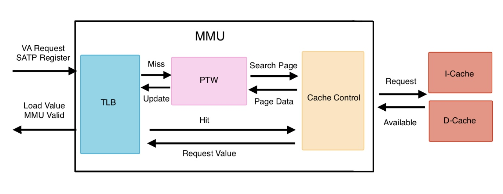

Memory Stage
LSU (Load Store Unit)
In RISC-V core, the Load Store Unit (LSU) is a critical pipeline component responsible for controlling load and store instructions and handling various error conditions, particularly address misalignment. The LSU acts as an interface between the processor’s execution stage and the Memory Management Unit (MMU), ensuring proper data transfer, address calculation, and exception handling.
LSU Queue: The
LSUimplement internal queue to store all necessary dtat for memory operactions.Address Misaligned: In this part, we want LSU detect misaligned error and solve it. Therefore, we need to record every condition, including memory addresses, data values, instruction types, and control signals.
Writeback Data Calculation: This part is for load instruction. In our design, lsu will sent read word signal to mmu even if instruction is
WBorWH. Therefore, it needs caculate word data after lsu get terget data.
Implement Detail
Parameter
Parameter |
Description |
|---|---|
LENGTH |
Queue length parameter |
DEPTH |
Queue depth parameter |
DATASIZE |
Internal data size for queue operations |
Address and Data Procressing
Address: LSU will control address which will be sent into MMU be mutiple of 4.
Data: LSU use mask to control which byte of write data are needed to be writen into memory.
LSU Queue
Queue store data which generate according to input opcode and singal.
Push: input instruction is valid, and misaligned condition.
Pop: when memory return finished signal.
Store Data:
Signal |
Width |
Description |
|---|---|---|
mem_addr |
32 |
Target memory address |
mem_data |
32 |
value of write data |
lb_inst, lh_inst, lw_inst |
1 |
Load instruction type |
signed_inst |
1 |
load instruction is signed |
mem_rd, mem_wr |
1 |
memory read and write signal |
mem_mask |
4 |
store or load mask |
u_type |
1 |
additional instruction for misaligned problem |
Address Misaligned
The LSU includes sophisticated misalignment detection and correction logic. When misaligned memory accesses are detected, the LSU automatically:
Splits the misaligned access into multiple aligned memory transactions
Maintains state information across multiple memory cycles
Reconstructs the final result from partial memory responses
Ensures atomicity of the original memory operation from an architectural perspective
The LSU handles unaligned memory accesses by splitting them into multiple aligned accesses:
Unaligned Detection
Half-word unaligned: Address bits [1:0] = 2’b11
Word unaligned: Address bits [1:0] ≠ 2’b00
Unaligned Access Handling: Maintains state machine (u_state) for multi-cycle unaligned operations. Then, automatically generates second memory access for unaligned transfers.Finally, reconstructs data from multiple memory responses in writeback calculation.
Writeback Value Calculation
For load instructions, the LSU performs intelligent data processing since it always requests full 32-bit words from the MMU regardless of the actual load instruction type (LB, LH, LW). The writeback calculation unit:
Extracts the relevant bytes from the loaded word based on address and instruction type Performs sign extension or zero extension as required Handles data reconstruction for misaligned accesses Manages the timing of writeback operations to the register file
Exception Handling
In this part, LSU will receive signal load_fault and store_fault which is sended from MMU. Then, LSU will generate exception signal with current load or store instruction.
MMU (Memory Management Unit)
In RISC-V core architectures, the Memory Management Unit (MMU) serves as a critical component responsible for translating virtual addresses into physical addresses. Beyond basic address translation, the MMU provides essential security and reliability features through comprehensive error detection mechanisms, including address range validation and page accessibility verification. Our MMU design implements a three-tier architecture comprising specialized units that work in concert to deliver efficient virtual memory management:
Architecture

Modules:
mmu_tlb.v: TLB store a history data of pages. It returns value if page was requested, or sent request signal into TLB to find correct page and its data.mmu_ptw.v: PTW can find the correct page with page index of virtual address and calculate physical address by page data. Then, page fault exceptions also are detected in this unit.mmu_cache_control.v: cache control is interface for Dcache and Icache. It receives available signal from cache and sents control signal such as valid signal to control MMU current request is finished.
Implement Detail
TLB
Use two register to store page value, and it compares input virtual page number and vpn_q. If TLB hit, TLB will return page value directly. Otherwise, MMU will start PTW to find target page and update TLB data.
Register |
Width |
Description |
|---|---|---|
vpn_q |
20 |
virtual page number |
entry_q |
32 |
page entry data |
PTW
Page table walker (PTW) can search page table and detect page errror condition. In our virtual address design, we use two level page to translate virtual address into physical address. Therefore, PTW use four state finite state machine to control procession of searching page. Four state include:
State |
Description |
|---|---|
IDLE |
wait MMU start PTW |
FIRST_LEVEL |
search first level page |
SECOND_LEVEL |
search second level page |
UPDATE |
get page data and update TLB |
Virtual Memory (Sv32)
We use Sv32 as our virtual address design. Sv32 use two-level page to translate virtual address into physical address. This is its virtual address structure:
31 - 22 |
21 - 12 |
11 - 0 |
|---|---|---|
First Level Page Index |
Second Level Page Index |
Offset |
Page Table Structure:
Bit Position |
Macro Name |
Description |
|---|---|---|
0 |
PRESENT |
Page is valid in memory |
1 |
READ |
Page has read permission |
2 |
WRITE |
Page has write permission |
3 |
EXEC |
Page has execute permission |
4 |
USER |
Page is accessible in user mode |
5 |
GLOBAL |
Page is global (not flushed on context switch) |
6 |
ACCESSED |
Page has been accessed |
7 |
DIRTY |
Page has been modified |
9:8 |
SOFT |
Software-defined bits (2 bits) |
29:10 |
ENTRY |
Physical page number |
SATP (Supervisor Address Translation and Protection): It is a register to store virtual address information and control page management, and it maintain by CSR. This is Satp structure:
31 |
30 - 22 |
19 - 0 |
|---|---|---|
MODE |
ASID |
PPN |
MODE: virtual address support in current.
ASID: address space identifier to control that address can be used in current process.
PPN: first level physical page number.